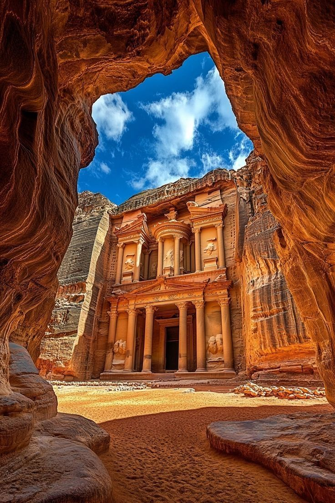
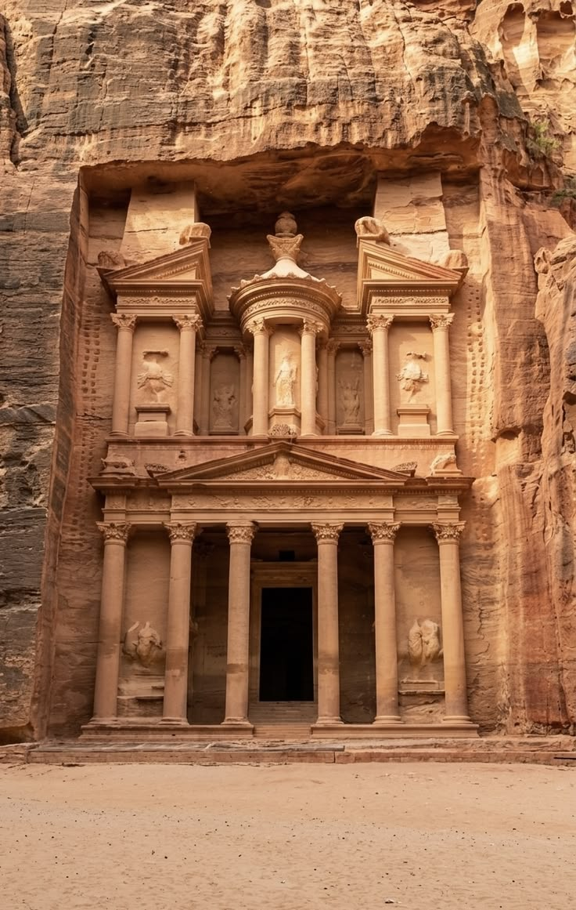
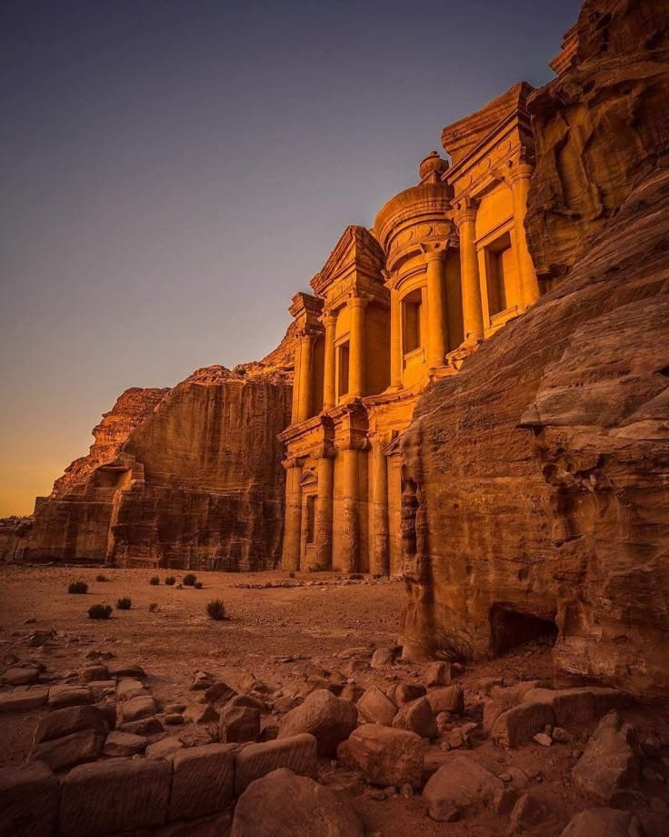
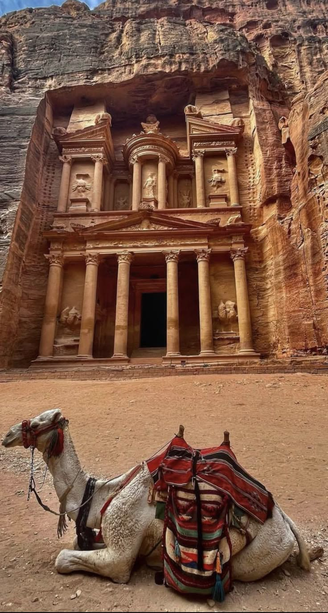

تُعد مدينة البتراء (أو البترا) واحدة من أبرز وأهم المعالم الأثرية في العالم، وتُعرف بلقب "المدينة الوردية" نظراً للون صخورها الفريد. إليك أبرز المعلومات عنها: لمحة تاريخية وجغرافية الموقع: تقع في محافظة معان جنوب المملكة الأردنية الهاشمية. التأسيس: أُسست كعاصمة لمملكة الأنباط في القرن الرابع قبل الميلاد (حوالي عام 312 ق.م)، وازدهرت بفضل موقعها الاستراتيجي على طريق الحرير وتجارة البخور والتوابل. الاسم: كانت تُعرف قديماً باسم "سلع"، وتشتهر اليوم بـ "المدينة الوردية" لجمال صخورها الرملية الملونة التي تتدرج بين الوردي والأحمر. الاكتشاف: ظلت المدينة غير معروفة للعالم الغربي لعدة قرون حتى أعاد اكتشافها المستشرق السويسري يوهان لودفيغ بركهارت عام 1812. أهم المعالم الأثرية تتميز البتراء بنظام هندسي فريد، حيث نُحتت معالمها مباشرة في الجبال الصخرية: السيق: الممر الطبيعي الرئيسي الذي يربط بين مدخل البتراء ووسط المدينة، ويصل طوله إلى حوالي 1 كيلومتر. الخزنة: أشهر معالم البتراء وأكثرها روعة، وهي واجهة منحوتة بدقة متناهية في الصخر. المسرح: مسرح نبطي ضخم منحوت في الصخر، يعود تاريخه إلى القرن الأول الميلادي. المقابر الملكية: مجموعة من المقابر المذهلة التي تظهر مهارة الأنباط في النحت والعمارة. الدير: أحد أكبر وأهم المعالم في الموقع، ويقع في منطقة مرتفعة تتطلب صعوداً ممتعاً. المجمع الكنسي: يضم بقايا كنائس تعود للفترة البيزنطية. مكانة عالمية التراث العالمي: أدرجتها منظمة اليونسكو على قائمة التراث العالمي في عام 1985. عجائب الدنيا: اختيرت في عام 2007 كواحدة من عجائب الدنيا السبع الجديدة في مسابقة عالمية. حقائق إضافية العبقرية الهندسية: لم يقتصر إبداع الأنباط على النحت فقط، بل برعوا في تصميم أنظمة متطورة لجر المياه وتخزينها، مما مكنهم من الاستقرار والازدهار وسط البيئة الصحراوية. التنوع الحضاري: تعكس آثار المدينة تمازجاً فريداً بين حضارات متعددة، بما في ذلك الأنباط، والرومان، والبيزنطيون. السياحة: تُعد البتراء الوجهة السياحية الأولى في الأردن، وتستقبل ملايين الزوار من مختلف أنحاء العالم سنوياً.